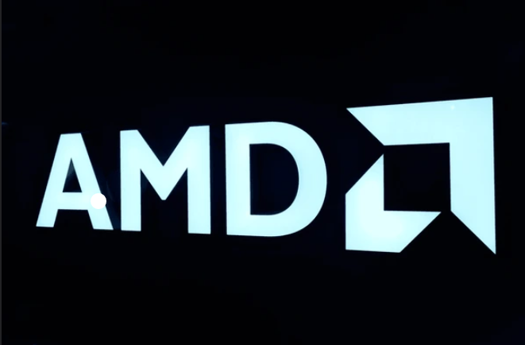
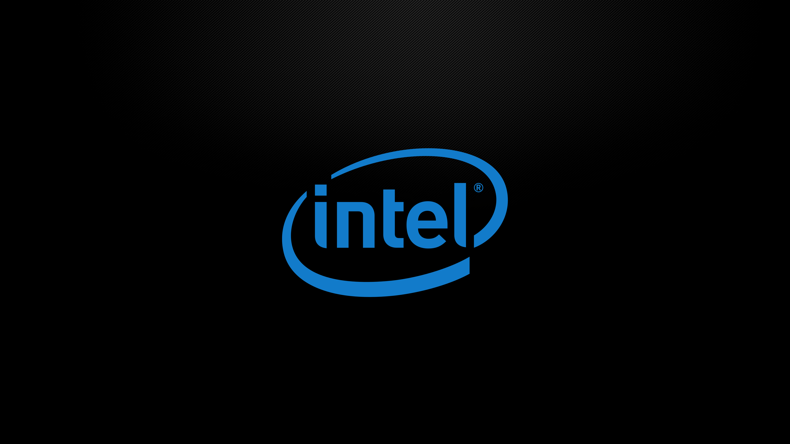

Что такое процессор и что о нём надо знать перед выбором?
Сегодня для рассмотрения будут взяты процессоры от фирм Amd и Intel.
Процессоры AMD

Процессоры от AMD
Для чего лучше всего подойдёт:
- Многопоточные рабочие нагрузки
- Видеомонтаж и рендеринг (Premiere Pro, DaVinci Resolve, Blender)
- 3D-моделирование (Cinema 4D, Maya, 3ds Max)
- Стриминг (кодирование видео в реальном времени)
- Научные вычисления и программирование
Ключевые характеристики
- Больше ядер и потоков в одинаковом ценовом сегменте
- Техпроцесс: 5-7 нм (более энергоэффективные)
- Архитектура: Zen 3, Zen 4
- Сокеты: AM4, AM5
- Технологии: Precision Boost, StoreMI
Процессоры Intel

Процессоры от Intel
Для чего лучше всего подойдёт:
- Игры (особенно старые и оптимизированные)
- Киберспортивные игры (CS2, Valorant, Overwatch 2)
- Игры с упором на single-core производительность
- Эмуляторы консолей (RPCS3, Yuzu)
- Профессиональные приложения с Intel-оптимизацией
- Adobe Photoshop, Lightroom, AutoCAD, Revit
Ключевые характеристики
- Более высокая тактовая частота в single-core
- Техпроцесс: Intel 7 (10 nm Enhanced SuperFin)
- Архитектура: Raptor Lake, Raptor Lake Refresh
- Сокеты: LGA 1700, LGA 1851
- Технологии: Turbo Boost, Thread Director
Сравнительная таблица по сегментам
| Сегмент | AMD | Intel | Рекомендация |
|---|---|---|---|
| Бюджетный | Ryzen 5 5600 | Core i3-13100 | AMD - лучше многопоточность |
| Средний | Ryzen 5 7600X | Core i5-13600K | Паритет - AMD для многозадачности, Intel для игр |
| Высокий | Ryzen 7 7800X3D | Core i7-14700K | AMD для игр, Intel для смешанных задач |
| Энтузиаст | Ryzen 9 7950X | Core i9-14900K | AMD для рендеринга, Intel для максимальной частоты |
| Гейминг | Ryzen 7 7800X3D | Core i5-14600K | AMD X3D - лучшие игровые результаты |